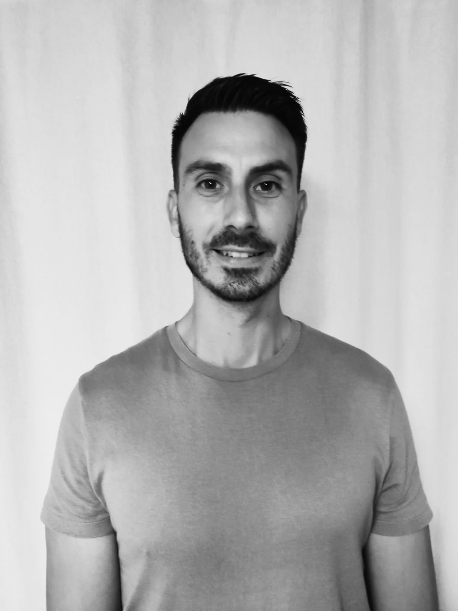

Jonas Jungling
Développeur Fullstack
Passionné par le développement web, je conçois des applications complètes et robustes. Formé à Holberton School et O’Clock, fondateur de MoveBy, je recherche un CDI pour continuer à évoluer en tant que développeur.
Qui je suis
Je m’appelle Jonas, développeur full-stack en reconversion professionnelle. Après une première carrière en dehors de la tech, j’ai choisi de me former sérieusement au développement web pour en faire un métier durable, exigeant et stimulant.
Mon parcours m’a permis de développer une approche à la fois humaine et rigoureuse du travail : sens des responsabilités, capacité d’adaptation, esprit d’équipe et volonté de progresser en continu.
Aujourd’hui, je conçois des applications utiles, bien pensées et techniquement solides, avec une attention particulière portée à la qualité du code, à la logique métier et à la robustesse de l’architecture.
Formation & reconversion
J’ai d’abord découvert le développement web lors d’une formation chez O’Clock, où j’ai réalisé des projets comme O’Scour et O’Flix en PHP/Symfony.
Ensuite, j'ai intégré Holberton School, une formation intensive orientée projet, où j'ai approfondi :
- la programmation en C et les notions bas niveau ;
- les systèmes et le shell (projet simple_shell) ;
- la conception d’API back-end (Flask, MySQL, SQLAlchemy) ;
- les bonnes pratiques de sécurité (authentification, JWT, rôles).
Projets marquants
Parmi les projets qui ont le plus marqué mon parcours :
- MoveBy : plateforme SaaS en ligne dédiée aux coachs indépendants, avec espace client, back-office, réservations, paiements et logique produit complète.
- Feminapedia : site web conçu pour des kinés, avec une approche orientée contenu, clarté de l’information et expérience utilisateur.
- HBnB : modélisation d’un mini-Airbnb avec API REST.
- simple_shell et _printf : projets en C qui m’ont appris à être rigoureux sur la mémoire, la logique et la structure du code.
Ce que je recherche
Je recherche un CDI en développement web / full-stack, au sein d’une équipe où je pourrai contribuer à des projets concrets et continuer à progresser techniquement.
J’apprécie particulièrement :
- concevoir des API et des back-ends robustes ;
- comprendre les besoins métier pour construire des solutions adaptées ;
- faire évoluer la qualité du code à travers les tests, le refactoring et la sécurité.
Me contacter
Si vous pensez que mon profil peut correspondre à vos besoins ou à votre équipe, je serai ravi d'échanger.